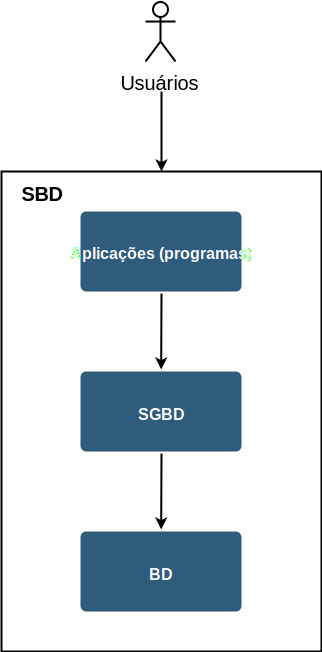

Banco de dados - Conceitos
Dado
Elemento primitivo de um banco de dados. São fatos que podem ser gravados e que possuem um significado implícito.
Exemplo 2.1
Casa, carro, pessoa, professor, cidade, estado, país, aluno, dado, banco de dados ("recursão?"), etc.
Banco de Dados
-
Representa uma porção do mundo real, o qual chamamos de minimundo ou "universo de discurso". O banco de dados deve sempre refletir o estado atual deste universo.
Exemplo 2.2
Se um banco de dados possui as entidades professor e disciplina; quando o professor termina de lecionar a disciplina, o sistema que consulta o banco de dados não pode informar que o professor ainda leciona a disciplina após o término, pois o banco deve refletir o estado atual deste universo.
Isso pode ser feito de forma automática ou manual. Seria muito mais prático se fosse feito de forma automática. Se o período letivo terminou, teoricamente a disciplina deve estar fechada.
Porém às vezes é necessário que haja intervenção humana para que ações sejam tomadas.
-
Conjunto lógico e ordenado de dados que possuem algum significado, e não uma coleção aleatória.
-
É projetado, construído e povoado por dados, por meio de uma interface que geralmente é o SGBD.
SGBD
Um Sistema Gerenciador de Banco de Dados (SGBD) é uma coleção de programas que permite aos usuários criar e manter (gerenciar ou administrar) um banco de dados.
- Definição (elementos e tipos dos dados)
- Construção (armazenamento de dados em mídia);
- Manipulação (consulta e atualização);
- Compartilhamento (de dados);
- Proteção do sistema (mal funcionamento);
- Segurança (ataques).
Exemplo 2.3
- Definir um sistema de banco de dados para uma instituição de pesquisa;
- É necessário existir dois bancos de dados separados, pois existem dois setores bem distintos dentro da instituição, e cada um desses setores será responsável por administrar o seu respectivo banco. Por exemplo estatística e informática;
- De acordo com o projeto, o banco de estatística deve ter 10 tabelas (que se relacionam); já o banco de informática precisa de 20 tabelas;
- Uma das tabelas de estatística é de disciplinas, que se relaciona com uma tabela de professores, pois cada professor pode lecionar N disciplinas durante um período de tempo; porém uma disciplina só pode ter um professor;
- Essas tabelas precisam ser criadas e povoadas, ou seja, dados externos devem ser adicionados nas tabelas (construção e manipulação); Para povoar um banco é necessário que usuários adicionem esses novos dados, ou outro sistema externo pode povoar esse banco caso seja necessário;
- Como os dados do banco de estatística é interessante para o departamento de informática, esse banco é compartilhado apenas para o departamento de informática por meio de acesso a um servidor adquirido que fica fisicamente no departamento de estatística e é compartilhado por uma rede interna entre estatística e informática; outros departamento não podem acessar esse banco de estatística; já o banco de informática já é aberto para a instituição inteira;
- O banco de informática faz espelhamento, os dados são duplicados para caso haja perda total ou parcial de uma das duas cópias.
Antigamente cada aplicação (programa) fazia tudo, ou seja, interagia com o usuário, fazia os cálculos e armazenava em arquivos. Porém, foram sendo identificadas funcionalidades comuns a muitos programas. Logo, para manter grandes repositórios compartilhados de dados, ou seja, para manter bancos de dados, são usados sistemas de gerência de banco de dados (SGBD).
No mercado, há vários tipos de SGBD. Aqui, nos concentramos em um tipo de SGBD, o relacional, que domina o mercado da atualidade.
SBD
Um Sistema de Banco de Dados (SBD) é sistema computacional criado para suportar/automatizar as operações de um determinado universo de discurso, composto pelo banco de dados, por estruturas de armazenamento e mecanismos para a manipulação de dados e informações (BD, SGBD e programas de aplicação).
